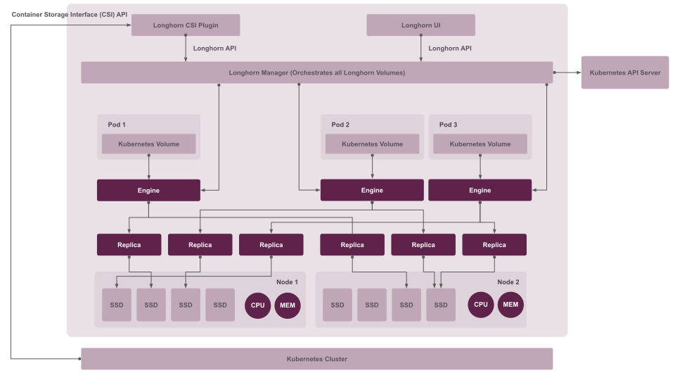

|
Ce document a été traduit à l'aide d'une technologie de traduction automatique. Bien que nous nous efforcions de fournir des traductions exactes, nous ne fournissons aucune garantie quant à l'exhaustivité, l'exactitude ou la fiabilité du contenu traduit. En cas de divergence, la version originale anglaise prévaut et fait foi. |
|
Il s'agit d'une documentation non publiée pour SUSE® Storage 1.12 (Dev). |
Architecture et concepts
SUSE Storage crée un contrôleur de stockage dédié pour chaque volume et réplique de manière synchrone le volume sur plusieurs répliques stockées sur plusieurs nœuds.
Le contrôleur de stockage et les répliques sont eux-mêmes orchestrés à l’aide de Kubernetes.
Pour un aperçu des fonctionnalités, consultez cette section.
Pour les exigences d’installation, rendez-vous à cette section.
Cette section suppose une familiarité avec les concepts de stockage persistant Kubernetes. Pour plus d’informations sur ces concepts, référez-vous à l'annexe. Pour de l’aide sur la terminologie utilisée dans cette page, référez-vous à cette section.
1. Conception
La conception a deux couches : la couche de données et la couche de contrôle. Le Longhorn Engine est un contrôleur de stockage qui correspond à la couche de données, et le Longhorn Manager correspond à la couche de contrôle.
1.1. Le Longhorn Manager et le Longhorn Engine
Le pod du Longhorn Manager s’exécute sur chaque nœud du SUSE Storage cluster en tant que DaemonSet Kubernetes. Il crée et gère des volumes dans le cluster Kubernetes et gère les appels API de l’interface utilisateur SUSE Storage ou du plugin Longhorn CSI. Il suit le modèle de contrôleur Kubernetes, qui est parfois appelé le modèle opérateur.
Le Longhorn Manager communique avec le serveur API Kubernetes pour créer un nouveau SUSE Storage volume CR. Ensuite, le Longhorn Manager surveille la réponse du serveur API, et lorsqu’il voit que le serveur API Kubernetes a créé un nouveau SUSE Storage volume CR, il crée un nouveau volume.
Lorsque le Longhorn Manager est sollicité pour créer un volume, il crée une instance du Longhorn Engine sur le nœud auquel le volume est attaché, et il crée une réplique sur chaque nœud où une réplique sera placée. Les répliques doivent être placées sur des hôtes séparés pour garantir une haute disponibilité.
Les multiples chemins de données pour les répliques garantissent la haute disponibilité d’un volume Longhorn. Si un problème survient avec une réplique ou avec le Longhorn Engine, cela n’affectera pas toutes les répliques ni l’accès du pod au volume. Le pod continuera à fonctionner normalement. Pour un volume donné avec un nombre de répliques de N, le volume Longhorn peut tolérer un maximum de N-1 échecs de répliques. C’est parce qu’au moins une réplique saine est nécessaire pour que le volume reste opérationnel.
Le Longhorn Engine s’exécute toujours sur le même nœud que le pod qui utilise le SUSE Storage volume. Il réplique le volume de manière synchrone à travers les multiples répliques stockées sur plusieurs nœuds.
Le Longhorn Engine et les répliques sont orchestrés à l’aide de Kubernetes.
Dans la figure ci-dessous,
-
Il y a trois instances avec des volumes SUSE Storage.
-
Chaque volume a un contrôleur dédié, appelé le Longhorn Engine. Pour les volumes V1, le moteur s’exécute en tant que processus Linux, tandis que pour les volumes V2, il fonctionne comme un périphérique de stockage de blocs RAID SPDK (bdev).
-
Chaque SUSE Storage volume a deux répliques. Dans V1, les répliques s’exécutent en tant que processus Linux, tandis que dans V2, elles sont mises en œuvre en tant que bdevs de volume logique SPDK.
-
Les flèches dans la figure indiquent le flux de données en lecture et en écriture entre le volume, l’instance de contrôleur, les instances de répliques et les disques.
-
En créant un Longhorn Engine séparé pour chaque volume, si un Longhorn Engine échoue, le fonctionnement des autres volumes n’est pas impacté.
Figure 1. Flux de données en lecture et en écriture entre le volume, le Longhorn Engine, les instances de répliques et les disques

1.2. Avantages d’une conception basée sur des microservices
Chaque Longhorn Engine n’a besoin de servir qu’un seul volume, simplifiant ainsi la conception des contrôleurs de stockage. Parce que le domaine de défaillance du logiciel de contrôleur est isolé à des volumes individuels, un plantage de contrôleur n’impactera qu’un seul volume.
Le Longhorn Engine est simple et léger, ce qui nous permet de créer des milliers de Longhorn Engines séparés. Kubernetes planifie ces Longhorn Engines séparés, tirant des ressources d’un ensemble partagé de disques et travaillant avec SUSE Storage pour former un système de stockage de blocs distribué résilient.
Parce que chaque volume a son propre Longhorn Engine, le Longhorn Engine et les instances de réplique pour chaque volume peuvent également être mis à niveau sans provoquer de perturbation notable des opérations d’E/S.
SUSE Storage peut créer un travail de longue durée pour orchestrer la mise à niveau de tous les volumes actifs sans perturber le fonctionnement en cours du système. Pour s’assurer qu’une mise à niveau ne cause pas de problèmes imprévus, SUSE Storage peut choisir de mettre à niveau un petit sous-ensemble des volumes et revenir à l’ancienne version si quelque chose ne va pas pendant la mise à niveau.
1.3. Pilote CSI
Le pilote CSI Longhorn prend le périphérique de stockage de blocs, le formate et le monte sur le nœud. Ensuite, le kubelet monte le périphérique à l’intérieur d’un Pod Kubernetes. Cela permet au Pod d’accéder au SUSE Storage volume.
Les images requises du pilote CSI Kubernetes seront déployées automatiquement par le déployeur de pilote Longhorn. Pour installer SUSE Storage dans un environnement isolé physiquement, référez-vous à cette section.
1.4. Plugin CSI
SUSE Storage est géré dans Kubernetes via un Plugin CSI. Cela permet une installation facile du plugin.
Le plugin CSI Kubernetes appelle SUSE Storage pour créer des volumes afin de créer des données persistantes pour une charge de travail Kubernetes. Le plugin CSI vous donne la possibilité de créer, supprimer, attacher, détacher, monter le volume et prendre des instantanés du volume. Toutes les autres fonctionnalités fournies par SUSE Storage sont mises en œuvre via l’interface utilisateur.
Le cluster Kubernetes utilise en interne l’interface CSI pour communiquer avec le plugin CSI Longhorn. Et le plugin CSI Longhorn communique avec le Longhorn Manager en utilisant l’API Longhorn.
Pour les volumes v1, SUSE Storage utilise iSCSI, ce qui peut nécessiter une configuration supplémentaire sur vos nœuds :
-
Selon la distribution Linux, vous devez installer soit
open-iscsisoitiscsiadm.
En revanche, les volumes v2 ont des prérequis différents, selon la configuration :
-
Des modules de kernel tels que
vfio_pcietuio_pci_genericsont requis. -
Pour le frontend NVMe-TCP, le module
nvme_tcpest nécessaire.
1.5. L’interface utilisateur
L’interface utilisateur interagit avec le Longhorn Manager via l’API Longhorn et agit comme un complément de Kubernetes. Grâce à l’interface utilisateur, vous pouvez gérer les instantanés, les sauvegardes, les nœuds et les disques.
De plus, l’utilisation de l’espace des nœuds de travail du cluster est collectée et illustrée par l’interface utilisateur. Voir ici pour plus de détails.
2. Volumes et stockage principal
Lors de la création d’un volume, le Longhorn Manager crée le microservice Longhorn Engine et les répliques pour chaque volume en tant que microservices. Ensemble, ces microservices forment un SUSE Storage volume. Chaque réplique doit être placée sur un nœud différent ou sur des disques différents.
Après que le Longhorn Engine est créé par le Longhorn Manager, il se connecte aux répliques. Le Longhorn Engine expose un périphérique de bloc sur le même nœud où le Pod s’exécute.
Un SUSE Storage volume peut être créé avec kubectl.
2.1. Provisionnement fin et taille du volume
SUSE Storage est un système de stockage à provisionnement fin. Cela signifie qu’un SUSE Storage volume ne prendra que l’espace dont il a besoin à ce moment-là. Par exemple, si vous avez alloué un volume de 20 Go mais n’en utilisez que 1 Go, la taille réelle des données sur votre disque serait de 1 Go. Vous pouvez voir la taille réelle des données dans les détails du volume dans l’interface utilisateur.
Un SUSE Storage volume ne peut pas rétrécir en taille si vous avez supprimé du contenu de votre volume. Par exemple, si vous créez un volume de 20 Go, utilisez 10 Go, puis supprimez le contenu de 9 Go, la taille réelle sur le disque serait toujours de 10 Go au lieu de 1 Go. Cela se produit parce que SUSE Storage fonctionne au niveau des blocs, et non au niveau du système de fichiers, donc SUSE Storage ne sait pas si le contenu a été supprimé par un utilisateur ou non. Cette information est principalement conservée au niveau du système de fichiers.
Pour en savoir plus sur les concepts liés à la taille des volumes, consultez ce document pour plus de détails.
2.2. Revenir aux volumes en mode maintenance
Lorsqu’un volume est attaché depuis l’interface utilisateur, il y a une case à cocher pour le mode maintenance. Il est principalement utilisé pour restaurer un volume à partir d’un instantané.
L’option entraînera l’attachement du volume sans activer le frontend (dispositif de bloc ou iSCSI), pour s’assurer que personne ne peut accéder aux données du volume lorsque le volume est attaché.
Après la version 0.6.0, l’opération de retour à un instantané nécessitait que le volume soit en mode maintenance. C’est parce que si le contenu du dispositif de bloc est modifié pendant que le volume est monté ou utilisé, cela entraînera une corruption du système de fichiers.
C’est également utile pour inspecter l’état du volume sans s’inquiéter que les données soient accidentellement accessibles.
2.3. Répliques
Chaque réplique contient une chaîne d’instantanés d’un SUSE Storage volume. Un instantané est comme une couche d’une image, avec l’instantané le plus ancien utilisé comme couche de base, et les instantanés plus récents au-dessus. Les données ne sont incluses dans un nouvel instantané que si elles écrasent des données dans un instantané plus ancien. Ensemble, une chaîne d’instantanés montre l’état actuel des données.
Pour chaque volume SUSE Storage, plusieurs répliques du volume doivent fonctionner dans le cluster Kubernetes, chacune sur un nœud séparé. Toutes les répliques sont traitées de la même manière, et le Longhorn Engine s’exécute toujours sur le même nœud que le pod, qui est également le consommateur du volume. De cette manière, nous nous assurons que même si le Pod est hors service, le Longhorn Engine peut être déplacé vers un autre Pod et que votre service continuera sans interruption.
Le nombre de répliques par défaut peut être modifié dans les paramètres. Lorsqu’un volume est attaché, le nombre de répliques pour le volume peut être modifié dans l’interface utilisateur.
Si le nombre de répliques saines actuel est inférieur au nombre de répliques spécifié, SUSE Storage commencera à reconstruire de nouvelles répliques.
Si le nombre de répliques saines actuel est supérieur au nombre de répliques spécifié, l’équilibrage automatique des répliques et la localité des données sont désactivés, SUSE Storage ne fera rien. Dans cette situation, si une réplique échoue ou est supprimée, SUSE Storage ne commencera pas à reconstruire de nouvelles répliques à moins que le nombre de répliques saines ne tombe en dessous du nombre de répliques spécifié. Si l’équilibrage automatique des répliques ou la localité des données sont activés, SUSE Storage pourrait supprimer l’une des répliques.
Les répliques SUSE Storage sont construites en utilisant Linux sparse files, qui supportent le provisionnement fin.
2.3.1. Comment fonctionnent les opérations de lecture et d’écriture pour les répliques
Lorsque des données sont lues à partir d’une réplique d’un volume, si les données peuvent être trouvées dans les données en direct, alors ces données sont utilisées. Sinon, le dernier instantané sera lu. Si les données ne sont pas trouvées dans le dernier instantané, l’instantané immédiatement antérieur est lu, et ainsi de suite, jusqu’à celui le plus ancien.
Lorsque vous prenez un instantané, un disque differencing est créé. À mesure que le nombre d’instantanés augmente, la chaîne de disques de différenciation (également appelée chaîne d’instantanés) peut devenir assez longue. Pour améliorer les performances de lecture, SUSE Storage maintient donc un index de lecture qui enregistre quel disque de différenciation contient des données valides pour chaque bloc de stockage de 4K.
Dans la figure suivante, le volume a huit blocs. L’index de lecture a huit entrées et est rempli paresseusement au fur et à mesure que les opérations de lecture ont lieu.
Une opération d’écriture réinitialise l’index de lecture, le faisant pointer vers les données en direct. Les données en direct consistent en des données à certains indices et de l’espace vide à d’autres indices.
Au-delà de l’index de lecture, nous ne maintenons actuellement pas de métadonnées supplémentaires pour indiquer quels blocs sont utilisés.
Figure 2. Comment l’index de lecture garde une trace de quel instantané contient les données les plus récentes

La figure ci-dessus est codée par couleur pour montrer quels blocs contiennent les données les plus récentes selon l’index de lecture, et la source des dernières données est également indiquée dans le tableau ci-dessous :
| Index de lecture | Source des dernières données |
|---|---|
0 |
Dernier instantané |
1 |
Données en direct |
2 |
Plus ancien instantané |
3 |
Plus ancien instantané |
4 |
Plus ancien instantané |
5 |
Données en direct |
6 |
Données en direct |
7 |
Données en direct |
Notez que, comme la flèche verte le montre dans la figure ci-dessus, l’Index 5 de l’index de lecture pointait auparavant vers le deuxième instantané le plus ancien comme source des données les plus récentes, puis il a changé pour pointer vers les données en direct lorsque le bloc de stockage de 4 Ko à l’Index 5 a été écrasé par les données en direct.
L’index de lecture est conservé en mémoire et consomme un octet pour chaque bloc de 4 Ko. L’index de lecture de la taille d’un octet signifie que vous pouvez prendre jusqu’à 254 instantanés pour chaque volume.
L’index de lecture consomme une certaine quantité de structure de données en mémoire pour chaque réplique. Un volume de 1 To, par exemple, consomme 256 Mo d’index de lecture en mémoire.
2.3.2 Comment de nouvelles répliques sont ajoutées
Lorsqu’une nouvelle réplique est ajoutée, les répliques existantes sont synchronisées avec la nouvelle réplique. La première réplique est créée en prenant un nouvel instantané des données en direct.
Les étapes suivantes montrent une répartition plus détaillée de la façon dont SUSE Storage ajoute de nouvelles répliques :
-
Le Longhorn Engine est mis en pause.
-
Disons que la chaîne d’instantanés au sein de la réplique se compose des données en direct et d’un instantané. Lorsque la nouvelle réplique est créée, les données en direct deviennent le dernier (deuxième) instantané et une nouvelle version vierge des données en direct est créée.
-
La nouvelle réplique est créée en mode WO (écriture seule).
-
Le Longhorn Engine est repris.
-
Tous les instantanés sont synchronisés.
-
La nouvelle réplique est configurée en mode RW (lecture-écriture).
2.3.3. Comment les répliques défectueuses sont reconstruites
SUSE Storage essaiera toujours de maintenir au moins un nombre donné de répliques saines pour chaque volume.
Lorsque le contrôleur détecte des pannes dans l’une de ses répliques, il marque la réplique comme étant en état d’erreur. Le Longhorn Manager est responsable de l’initiation et de la coordination du processus de reconstruction de la réplique défectueuse.
Pour reconstruire la réplique défectueuse, le Longhorn Manager crée une réplique vierge et appelle le Longhorn Engine pour ajouter la réplique vierge à l’ensemble de répliques du volume.
Pour ajouter la réplique vierge, le Longhorn Engine effectue les opérations suivantes :
-
Met en pause toutes les opérations en lecture et en écriture.
-
Ajoute la réplique vierge en mode WO (écriture seule).
-
Prend un instantané de toutes les répliques existantes, qui auront maintenant un disque de différenciation vierge en tête.
-
Reprend toutes les opérations en lecture et en écriture. Seules les opérations d’écriture seront envoyées à la réplique nouvellement ajoutée.
-
Démarre un processus en arrière-plan pour synchroniser tous les disques de différenciation sauf le plus récent d’une bonne réplique vers la réplique vierge.
-
Après la synchronisation, toutes les répliques ont maintenant des données cohérentes, et le gestionnaire de volume définit la nouvelle réplique en mode RW (lecture-écriture).
Enfin, le Longhorn Manager appelle le Longhorn Engine pour supprimer la réplique défectueuse de son ensemble de répliques.
2.4. Images instantanées
La fonction d’instantané permet à un volume d’être restauré à un certain point dans l’histoire. Des sauvegardes dans le stockage secondaire peuvent également être créées à partir d’un instantané.
Lorsqu’un volume est restauré à partir d’un instantané, il reflète l’état du volume au moment où l’instantané a été créé.
La fonction d’instantané fait également partie du SUSE Storage processus de reconstruction. Chaque fois que SUSE Storage détecte qu’une réplique est hors service, elle prendra automatiquement un instantané (système) et commencera à le reconstruire sur un autre nœud.
2.4.1. Comment fonctionnent les instantanés
Un instantané est comme une couche d’une image, avec l’instantané le plus ancien utilisé comme couche de base, et les instantanés plus récents au-dessus. Les données ne sont incluses dans un nouvel instantané que si elles écrasent des données dans un instantané plus ancien. Ensemble, une chaîne d’instantanés montre l’état actuel des données. Pour une explication plus détaillée sur la façon dont les données sont lues à partir d’une réplique, reportez-vous à la section sur les opérations de lecture et d’écriture pour les répliques.
Les instantanés ne peuvent pas changer après leur création, sauf si un instantané est supprimé, auquel cas ses modifications sont fusionnées avec le prochain instantané le plus récent. De nouvelles données sont toujours écrites dans la version en direct. De nouveaux instantanés sont toujours créés à partir des données en direct.
Pour créer un nouvel instantané, les données en direct deviennent le nouvel instantané. Ensuite, une nouvelle version vierge des données en direct est créée, remplaçant les anciennes données en direct.
2.4.2. Instantanés récurrents
Pour réduire l’espace occupé par les instantanés, l’utilisateur peut planifier un instantané ou une sauvegarde récurrents avec un nombre d’instantanés à conserver, ce qui créera automatiquement un nouvel instantané/sauvegarde selon le calendrier, puis nettoiera les instantanés/sauvegardes excessifs.
2.4.3. Suppression d’instantanés
Les instantanés indésirables peuvent être supprimés manuellement via l’interface utilisateur. Les instantanés générés par le système seront automatiquement marqués pour suppression si la suppression de n’importe quel instantané a été déclenchée.
Le dernier instantané ne peut pas être supprimé. C’est parce que chaque fois qu’un instantané est supprimé, SUSE Storage fusionnera son contenu avec le prochain instantané, de sorte que le prochain instantané et les suivants conservent le contenu correct.
Mais SUSE Storage ne peut pas faire cela pour le dernier instantané car il n’y a pas d’instantané plus récent à fusionner avec l’instantané supprimé. Le prochain “snapshot” du dernier instantané est le volume en direct (volume-head), qui est en cours de lecture/écriture par l’utilisateur en ce moment, donc le processus de fusion ne peut pas se produire.
Au lieu de cela, le dernier instantané sera marqué comme supprimé, et il sera nettoyé la prochaine fois que cela sera possible.
Pour nettoyer le dernier instantané, un nouvel instantané peut être créé, puis l’ancien "dernier" instantané peut être supprimé.
2.4.4. Stockage des instantanés
Les instantanés sont stockés localement, en tant que partie de chaque réplique d’un volume. Ils sont stockés sur le disque des nœuds au sein du cluster Kubernetes. Les instantanés sont stockés au même endroit que les données du volume sur le disque physique de l’hôte.
2.4.5. Consistance en cas de panne
SUSE Storage est une solution de stockage de blocs cohérente en cas de panne.
Il est normal que le système d’exploitation conserve le contenu dans le cache avant de l’écrire dans la couche de blocs. Cela signifie que si toutes les répliques sont hors service, alors SUSE Storage peut ne pas contenir les modifications qui se sont produites juste avant l’arrêt, car le contenu a été conservé dans le cache au niveau du système d’exploitation et n’a pas encore été transféré au système SUSE Storage.
Ce problème est similaire à ceux qui pourraient survenir si votre ordinateur de bureau s’éteint en raison d’une coupure de courant. Après avoir rétabli l’alimentation, vous pourriez trouver des fichiers corrompus sur le disque dur.
Pour forcer l’écriture des données dans le stockage de blocs à tout moment, la commande sync peut être exécutée manuellement sur le nœud, ou le disque peut être démonté. Le système d’exploitation écrirait le contenu du cache dans la couche de blocs dans les deux situations.
SUSE Storage exécute automatiquement la commande sync avant de créer un instantané.
3. Sauvegardes et stockage secondaire
Une sauvegarde est un objet dans le stockage de sauvegarde, qui est un stockage d’objets compatible NFS ou S3 externe au cluster Kubernetes. Les sauvegardes fournissent une forme de stockage secondaire afin que même si votre cluster Kubernetes devient indisponible, vos données puissent toujours être récupérées.
Parce que la réplication des volumes est synchronisée, et en raison de la latence du réseau, il est difficile de faire de la réplication inter-régions. Le backupstore est également utilisé comme un moyen de résoudre ce problème.
Lorsque la cible de sauvegarde est configurée sur l’interface utilisateur (Sauvegarde et restauration → Cibles de sauvegarde), SUSE Storage peut se connecter au backupstore et afficher une liste des sauvegardes existantes sur l’écran Sauvegarde.
Si SUSE Storage fonctionne dans un second cluster Kubernetes, il peut également synchroniser les volumes de récupération après sinistre avec les sauvegardes dans le stockage secondaire, afin que vos données puissent être récupérées plus rapidement dans le second cluster Kubernetes.
3.1. Comment fonctionnent les sauvegardes
Une sauvegarde est créée en utilisant un instantané comme source, de sorte qu’elle reflète l’état des données du volume au moment où l’instantané a été créé. Une sauvegarde est stockée à distance, en dehors du cluster.
Contrairement à un instantané, une sauvegarde peut être considérée comme une version aplatie d’une chaîne d’instantanés. De la même manière que des informations sont perdues lorsqu’une image en couches est convertie en une image plate, des données sont également perdues lorsqu’une chaîne d’instantanés est convertie en une sauvegarde. Dans les deux conversions, toutes les données écrasées seraient perdues.
Parce que les sauvegardes ne contiennent pas d’instantanés, elles ne contiennent pas l’historique des modifications des données du volume. Après avoir restauré un volume à partir d’une sauvegarde, le volume contient initialement un instantané. Cet instantané est une version conflée de tous les instantanés de la chaîne originale, et il reflète les données en direct du volume au moment où la sauvegarde a été créée.
Alors que les instantanés peuvent faire des centaines de gigaoctets, les sauvegardes sont constituées de fichiers de 2 Mo.
Chaque nouvelle sauvegarde du même volume original est incrémentielle, détectant et transmettant les blocs modifiés entre les instantanés. C’est une tâche relativement facile car chaque instantané est un fichier differencing et ne stocke que les changements depuis le dernier instantané. Ce design signifie également que si aucun bloc n’a changé et qu’une sauvegarde est effectuée, cette sauvegarde dans le backupstore apparaîtra comme 0 octets. Cependant, si vous deviez restaurer à partir de cette sauvegarde, elle contiendrait toujours l’intégralité des données du volume, car elle restaurerait les blocs nécessaires déjà présents dans le backupstore, qui sont requis pour une sauvegarde.
Pour éviter de stocker un très grand nombre de petits blocs de stockage, SUSE Storage effectue des opérations de sauvegarde en utilisant des blocs de 2 Mo. Cela signifie que si un bloc de 4 Ko dans une limite de 2 Mo est modifié, SUSE Storage sauvegardera l’intégralité du bloc de 2 Mo. Cela offre le bon équilibre entre facilité de gestion et efficacité.
Figure 3. La relation entre les sauvegardes dans le stockage secondaire et les instantanés dans le stockage primaire

La figure ci-dessus décrit comment les sauvegardes sont créées à partir des instantanés :
-
Le côté stockage principal du diagramme montre une réplique d’un volume de SUSE Storage dans le cluster Kubernetes. La réplique se compose d’une chaîne de quatre instantanés. Dans l’ordre du plus récent au plus ancien, les instantanés sont Données en direct, snap3, snap2 et snap1.
-
Le côté stockage secondaire du diagramme montre deux sauvegardes dans un service de stockage d’objets externe tel que S3.
-
Dans le stockage secondaire, le code couleur pour la sauvegarde à partir de snap2 montre qu’elle inclut à la fois le changement bleu de snap1 et les changements verts de snap2. Aucun changement de snap2 n’a écrasé les données de snap1, donc les changements de snap1 et snap2 sont tous deux inclus dans la sauvegarde à partir de snap2.
-
La sauvegarde nommée sauvegarde-à-partir-de-snap3 reflète l’état des données du volume au moment où snap3 a été créé. Le code couleur et les flèches indiquent que la sauvegarde-à-partir-de-snap3 contient tous les changements rouge foncé de snap3, mais seulement un des changements verts de snap2. C’est parce qu’un des changements rouges dans snap3 a écrasé un des changements verts dans snap2. Cela illustre comment les sauvegardes n’incluent pas l’historique complet des changements, car elles confondent les instantanés avec les instantanés qui les ont précédés.
-
Chaque sauvegarde maintient son propre ensemble de blocs de 2 Mo. Chaque bloc de 2 Mo est sauvegardé une seule fois. Les deux sauvegardes partagent un bloc vert et un bloc bleu.
Lorsqu’une sauvegarde est supprimée du stockage secondaire, SUSE Storage ne supprime pas tous les blocs qu’elle utilise. Au lieu de cela, effectue périodiquement une collecte des blocs inutilisés du stockage secondaire.
Les blocs de 2 Mo pour toutes les sauvegardes appartenant au même volume sont stockés sous un répertoire commun et peuvent donc être partagés entre plusieurs sauvegardes.
Pour économiser de l’espace, les blocs de 2 Mo qui n’ont pas changé entre les sauvegardes peuvent être réutilisés pour plusieurs sauvegardes qui partagent le même volume de sauvegarde dans le stockage secondaire. Parce que des sommes de contrôle sont utilisées pour adresser les blocs de 2 Mo, nous atteignons un certain degré de dé-duplication pour les blocs de 2 Mo dans le même volume.
Les métadonnées au niveau du volume sont stockées dans volume.cfg. Les fichiers de métadonnées pour chaque sauvegarde (par exemple, snap2.cfg) sont relativement petits car ils ne contiennent que les offsets et sommes de contrôle de tous les blocs de 2 Mo dans la sauvegarde.
Chaque bloc de 2 Mo (.blk) est compressé.
3.2. Sauvegardes récurrentes
Les opérations de sauvegarde peuvent être planifiées à l’aide de la fonction d’instantané et de sauvegarde récurrents, mais elles peuvent également être effectuées au besoin.
Il est recommandé de planifier des sauvegardes récurrentes pour vos volumes. Si un stockage de sauvegarde n’est pas disponible, il est recommandé de planifier plutôt l’instantané récurrent.
La création de sauvegarde implique de copier les données à travers le réseau, donc cela prendra du temps.
3.3. Volumes de reprise après sinistre
Un volume de reprise après sinistre (DR) est un volume spécial qui stocke des données dans un cluster de sauvegarde au cas où l’ensemble du cluster principal tomberait en panne. Les volumes DR sont utilisés pour augmenter la résilience des volumes SUSE Storage.
Parce que le but principal d’un volume DR est de restaurer des données à partir de la sauvegarde, ce type de volume ne prend pas en charge les actions suivantes avant d’être activé :
-
Créer, supprimer et restaurer des instantanés
-
Créer des sauvegardes
-
Créer des volumes persistants
-
Créer des demandes de volumes persistants
Un volume DR peut être créé à partir de la sauvegarde d’un volume dans le stockage de sauvegarde. Après la création du volume DR, SUSE Storage surveillera son volume de sauvegarde original et restaurera progressivement à partir de la dernière sauvegarde. Un volume de sauvegarde est un objet dans le stockage de sauvegarde qui contient plusieurs sauvegardes du même volume.
Si le volume original dans le cluster principal tombe en panne, le volume DR peut être immédiatement activé dans le cluster de sauvegarde, réduisant le temps nécessaire pour restaurer les données du stockage de sauvegarde vers le volume dans le cluster de sauvegarde.
Lorsqu’un volume DR est activé, SUSE Storage vérifiera la dernière sauvegarde du volume original. Si cette sauvegarde n’a pas déjà été restaurée, la restauration sera lancée, et l’action d’activation échouera. Les utilisateurs doivent attendre la fin de la restauration avant de réessayer.
La cible de sauvegarde dans les paramètres ne peut pas être mise à jour s’il existe des volumes DR.
Après qu’un volume DR soit activé, il devient un volume normal SUSE Storage et ne peut pas être désactivé.
3.4. Intervalles de mise à jour du Backupstore, RTO et RPO
La restauration incrémentielle est généralement déclenchée par la mise à jour périodique du backupstore. Vous pouvez définir l’intervalle de mise à jour sur l’écran des paramètres de la cible de sauvegarde (Sauvegarde et Restauration → Cibles de Sauvegarde).
Notez que cet intervalle peut potentiellement impacter l’Objectif de Temps de Récupération (RTO). S’il est trop long, il peut y avoir une grande quantité de données à restaurer pour le volume de récupération après sinistre, ce qui prendra beaucoup de temps.
Quant à l’Objectif de Point de Récupération (RPO), il est déterminé par la planification de sauvegarde récurrente du volume de sauvegarde. Si la planification de sauvegarde récurrente pour le volume normal A crée une sauvegarde chaque heure, alors le RPO est d’une heure. Vous pouvez vérifier ici comment définir des sauvegardes récurrentes dans SUSE Storage.
L’analyse suivante suppose que le volume crée une sauvegarde chaque heure, et que la restauration incrémentielle des données d’une sauvegarde prend cinq minutes :
-
Si l’intervalle de sondage du backupstore est de 30 minutes, alors il y aura au maximum une sauvegarde de données depuis la dernière restauration. Le temps pour restaurer une sauvegarde est de cinq minutes, donc le RTO serait de cinq minutes.
-
Si l’intervalle de sondage du backupstore est de 12 heures, alors il y aura au maximum 12 sauvegardes de données depuis la dernière restauration. Le temps pour restaurer les sauvegardes est de 5 * 12 = 60 minutes, donc le RTO serait de 60 minutes.
Annexe : Comment fonctionne le stockage persistant dans Kubernetes
Pour comprendre le stockage persistant dans Kubernetes, il est important de comprendre les Volumes, PersistentVolumes, PersistentVolumeClaims et StorageClasses, et comment ils fonctionnent ensemble.
Une propriété importante d’un Volume Kubernetes est qu’il a le même cycle de vie que le Pod auquel il appartient. Le volume est perdu si le pod est supprimé. En revanche, un PersistentVolume continue d’exister dans le système jusqu’à ce que les utilisateurs le suppriment. Les volumes peuvent également être utilisés pour partager des données entre des conteneurs à l’intérieur du même Pod, mais ce n’est pas le cas d’utilisation principal, car les utilisateurs n’ont normalement qu’un seul conteneur par Pod.
Un PersistentVolume (PV) est un espace de stockage persistant dans le cluster Kubernetes, tandis qu’un PersistentVolumeClaim (PVC) est une demande de stockage. StorageClasses permettent de provisionner dynamiquement du nouveau stockage pour les charges de travail à la demande.
Comment les charges de travail Kubernetes utilisent un stockage persistant, qu’il soit nouveau ou existant.
En termes généraux, il existe deux principales façons d’utiliser le stockage persistant dans Kubernetes :
-
Utiliser un volume persistant existant
-
Provisionner dynamiquement de nouveaux volumes persistants
Provisionnement de stockage existant
Pour utiliser un PV existant, votre application devra utiliser un PVC qui est lié à un PV, et le PV doit inclure les ressources minimales requises par le PVC.
En d’autres termes, un flux de travail typique pour configurer un stockage existant dans Kubernetes est le suivant :
-
Configurer des volumes de stockage persistant, au sens de stockage physique ou virtuel auquel vous avez accès.
-
Ajouter un PV qui fait référence au stockage persistant.
-
Ajouter un PVC qui fait référence au PV.
-
Monter le PVC en tant que volume dans votre charge de travail.
Lorsqu’un PVC demande un espace de stockage, le serveur API Kubernetes essaiera de faire correspondre ce PVC avec un PV pré-alloué lorsque des volumes correspondants deviennent disponibles. Si une correspondance peut être trouvée, le PVC sera lié au PV, et l’utilisateur commencera à utiliser cet espace de stockage pré-alloué.
Si un volume correspondant n’existe pas, les PersistentVolumeClaims resteront non liés indéfiniment. Par exemple, un cluster provisionné avec de nombreux PV de 50 Gi ne correspondrait pas à un PVC demandant 100 Gi. Le PVC pourrait être lié après qu’un PV de 100 Gi soit ajouté au cluster.
En d’autres termes, vous pouvez créer un nombre illimité de PVC, mais ils ne seront liés aux PV que si le maître Kubernetes peut trouver un PV suffisant qui dispose d’au moins l’espace disque requis par le PVC.
Provisionnement dynamique de stockage
Pour le provisionnement dynamique de stockage, votre application devra utiliser un PVC qui est lié à une StorageClass. La StorageClass contient l’autorisation de provisionner de nouveaux volumes persistants.
Le flux de travail global pour le provisionnement dynamique de nouveau stockage dans Kubernetes implique une ressource StorageClass :
-
Ajoutez une StorageClass et configurez-la pour provisionner automatiquement de nouveaux espaces de stockage à partir du stockage auquel vous avez accès.
-
Ajoutez un PVC qui fait référence à la StorageClass.
-
Montez le PVC en tant que volume pour votre charge de travail.
Les administrateurs de cluster Kubernetes peuvent utiliser une StorageClass Kubernetes pour décrire les “classes” de stockage qu’ils offrent. Les StorageClasses peuvent avoir différentes limites de capacité, différents IOPS, ou tout autre paramètre que le provisionneur prend en charge. Le provisionneur spécifique au fournisseur de stockage est utilisé avec la StorageClass pour allouer automatiquement des PV, en suivant les paramètres définis dans l’objet StorageClass. De plus, le provisionneur a maintenant la capacité d’imposer les quotas de ressources et les exigences de permission pour les utilisateurs. Dans cette conception, les administrateurs sont libérés du travail inutile de prédire le besoin de PV et de les allouer.
Lorsqu’une StorageClass est utilisée, un administrateur Kubernetes n’est pas responsable de l’allocation de chaque espace de stockage. L’administrateur doit simplement donner aux utilisateurs la permission d’accéder à un certain pool de stockage et décider du quota pour l’utilisateur. Ensuite, l’utilisateur peut extraire les espaces de stockage nécessaires du pool de stockage.
Les StorageClasses peuvent également être utilisées sans créer explicitement un objet StorageClass dans Kubernetes. Puisque la StorageClass est également un champ utilisé pour faire correspondre un PVC avec un PV, un PV peut être créé manuellement avec un nom de Storage Class personnalisé, puis un PVC peut être créé qui demande un PV avec ce nom de StorageClass. Kubernetes peut alors lier votre PVC au PV avec le nom de StorageClass spécifié, même si l’objet StorageClass n’existe pas en tant que ressource Kubernetes.
SUSE Storage introduit une StorageClass afin que vos charges de travail Kubernetes puissent allouer l’espace nécessaire dans votre stockage persistant.
Mise à l’échelle horizontale pour les charges de travail Kubernetes avec stockage persistant
Le VolumeClaimTemplate est une propriété de spécification de StatefulSet, et il fournit un moyen pour la solution de stockage de blocs de s’échelonner horizontalement pour une charge de travail Kubernetes.
Cette propriété peut être utilisée pour créer des PVs et PVCs correspondants pour les Pods qui ont été créés par un StatefulSet.
Ces PVCs sont créés en utilisant une StorageClass, de sorte qu’ils peuvent être configurés automatiquement lorsque le StatefulSet s’agrandit.
Lorsqu’un StatefulSet se réduit, les PVs/PVCs supplémentaires sont conservés dans le cluster, et ils sont réutilisés lorsque le StatefulSet s’agrandit à nouveau.
Le VolumeClaimTemplate est important pour les solutions de stockage en bloc comme EBS et SUSE Storage. Parce que ces solutions sont intrinsèquement ReadWriteOnce,, elles ne peuvent pas être partagées entre les Pods.
Les déploiements ne fonctionnent pas bien avec le stockage persistant si vous avez plus d’un Pod fonctionnant avec des données persistantes. Pour plus d’un Pod, un StatefulSet doit être utilisé.